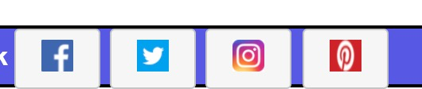
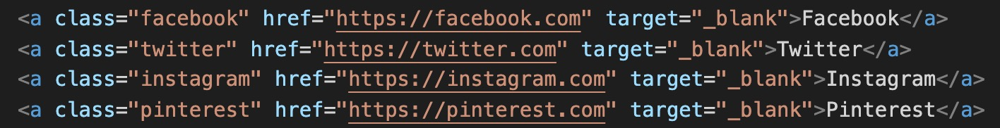
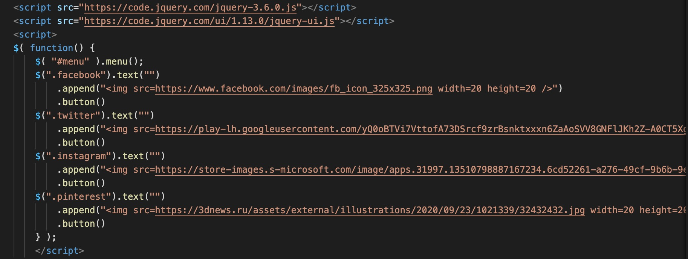

Завданням даної лаюораторної роботи передбачалося додавання до сайту (або до окремої сторінки) кнопок соціальних мереж: Facebook, Twitter, Instagram, Pinterest.
Для додавання кнопок нами були використанні гіперпосилання, що пізніше за допомогою фреймворка jQuery перетворюються у кнопки в яких зникає текст та з'являється зображення заданої соц мережі.
На сайті це виглядає таким чином:

Кнопки були розміщєні у футері веб-додатку.
Програмна реалізація виглядає таким чином:

